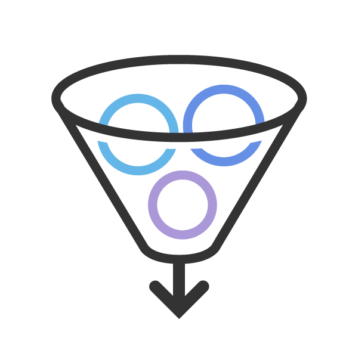

Clearly identify and define the services which are easier to understand, support and deliver. This may sound easy but experience suggests that it is the most challenging task for the BA communityf
 Don't let technology gobble up staff time and money, without giving enough back. Effective organizations have a positive Return on Investment, or ROI, for individual technology choices as well as their overall investment in technology. The basic formula is: ROI = net gain/cost Example: I spend $50 and make $75. My net gain is $25. ROI = 25/50 = .5 or 50%
Time to market is the period of time from when a product idea has general agreement and resources are committed to the project, when the final product is built and out the door to a customer.
 Portfolio management is the centralized management of one or more portfolios, which includes identifying, prioritizing, authorizing, managing, and controlling projects, programs and other related work to achieve specific strategic business objectives.
Portfolio management is the centralized management of one or more portfolios, which includes identifying, prioritizing, authorizing, managing, and controlling projects, programs and other related work to achieve specific strategic business objectives.